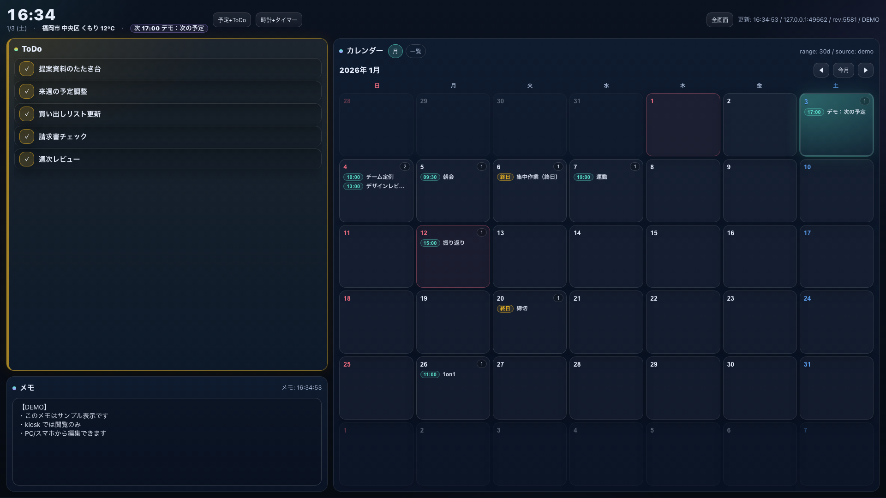
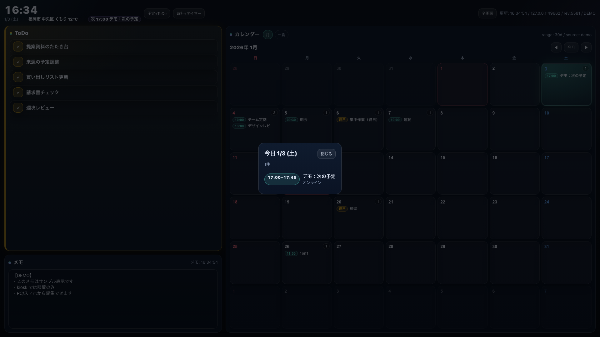

A lightweight dashboard you keep open on a tablet. Calendar is shown as a month grid with event titles inside each day, plus Todo / Memo / Weather.
Events are visible directly in each day cell. Today is strongly highlighted.
Japanese public holidays are shown in red (e.g. 成人の日).
Designed to keep items readable and always visible on a wall display.
Editable from PC/phone. Kiosk/tablet defaults to view‑only.
Displays current weather + temperature (Open‑Meteo).
Single Python server file with embedded HTML/JS/CSS.


Run the server on a Mac, then open it from a tablet on the same Wi‑Fi. Recommended URL for wall display: ?kiosk=1.
git clone https://github.com/daideguchi/desk-screen.git
cd desk-screen
cp .env.example .env
./desk start
After start, it prints URLs. Open:
http://<mac-ip>:<port>/?kiosk=1
For portfolio screenshots, use demo mode to show sample calendar/todo/memo. Demo mode is read‑only.
http://<mac-ip>:<port>/?kiosk=1&demo=1
If Bonjour/mDNS is available on your network, you can access via .local (more stable than IP):
http://<LocalHostName>.local:<port>/?kiosk=1
MIT